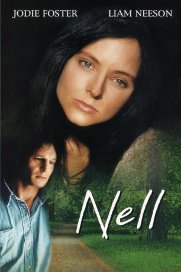
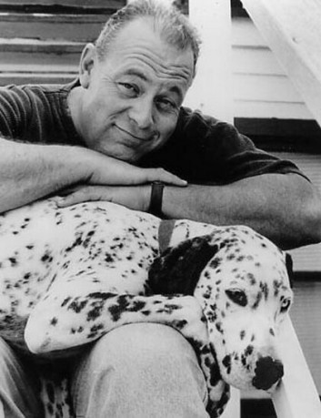

#9181 Nell
Auszeichnungen: für 1 Oscars nominiert
 
 IMDB-Wertung: 6.5 / 10
IMDB-Wertung: 6.5 / 10  Tomatometer: 55
Tomatometer: 55  Metascore: 0
Metascore: 0 
Mit der Geschichte einer jungen Frau, die unberührt von der modernen Gesellschaft lebt, nimmt Jodie Foster die Zuschauer mit auf eine Reise durch Seele, Geist und Herz. Dieser kluge Film erzielt seine Ausstrahlung nicht allein dank der außergewöhnlichen Darstellungskunst der Schauspieler, sondern auch durch eine atemberaubende Kameraführung. All das macht Nell zu einem gefühlvollen Film, der lange im Gedächtnis bleibt. Mit ihrer Mutter führt Nell ein einfaches, ursprüngliches Leben in der unberührten Wildnis der Smoky Mountains. Doch als die Mutter stirbt, greifen zwei Ärzte aus der Stadt in ihr friedliches Leben ein. Plötzlich wird Nell mit einer völlig fremden Außenwelt konfrontiert, einer Welt, die außergewöhnliche Erfahrungen für sie bereit hält – aber auch Gefahren jenseits ihrer Vorstellungskraft.
Jahr: 1994
Dauer: 108 Minuten
FSK: 12
Land: USA Studio: Twentieth Century FoxTonspuren: DD2.0 - ,
Untertitel:
Auflösung: 1080p (1920x824) Größe: 6021 MB
Genre: Drama
Regisseur:  Michael Apted
Michael Apted
Drehbuch: Per Schreiner
Soundtrack: Mark Isham
Darsteller:
 Jodie Foster als Nell
Jodie Foster als Nell Liam Neeson als Jerome Lovell
Liam Neeson als Jerome Lovell- Natasha Richardson als Paula Olsen
 Richard Libertini als Alexander Paley
Richard Libertini als Alexander Paley Nick Searcy als Todd Peterson
Nick Searcy als Todd Peterson Jeremy Davies als Billy Fisher
Jeremy Davies als Billy Fisher-  O'Neal Compton als Don Fontana
 Sean Bridgers als Mike Ibarra
Sean Bridgers als Mike Ibarra Joe Inscoe als Judge
Joe Inscoe als Judge- Marlon Jackson als Male Nurse
- Robin Mullins als Mary Peterson
- Heather M. Bomba als Twin #1
- Marianne E. Bomba als Twin #2
- Stephanie Dawn Wood als Ruthie Lovell
- Mary Lynn Riner als Janet Baring
- Lucile McIntyre als Sally
- Al Wiggins als Harry Goppel
- Beth Bostic als Jean Malinowski
- Rob Buren III als Stevie
- Chris T. Hill als Jed
- Tim Mehaffey als Shane
- Dana Stevens als Rachel Weiss
- Nicole Adair als Autistic Child
- Robin Rochelle als Teacher
- Susan Correll Hickerson als Administrator
- Danny Millsaps als Deputy
Datei: X:\1994\Nell (1994, FSK12, 1920x824).mkv seit 19.07.2018
Festplatte: HD 1992-1995
 Es gibt insgesamt 67 Filme in der Gruppe '1994'
Es gibt insgesamt 67 Filme in der Gruppe '1994'